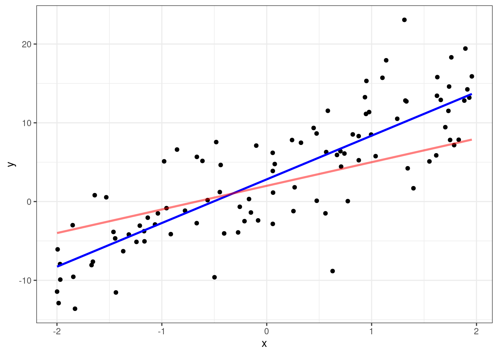

2 Theory
2.1 Statistical learning
In short, statistical learning is the process of using statistical methods and mathematical models to understand data (James et al., 2023, p. 1). This process can be used to predict values given a set of variables, or to gain a better understanding of how those variables relate to the wanted value, also called inference. Often, the goal might be both prediction and inference.
Given that we wish to predict the response value \(Y\) from one or more variables, or predictors, \(X\), this can be expressed in a general form as Equation 2.1.
\[ Y = f(X) + \epsilon \tag{2.1}\]
Here, \(f\) is some kind of transformation made on \(X\) in order for it to help us estimate \(Y\), end \(\epsilon\) is an error term which is unknown, and assumed to be normally distributed with a mean of 0. We need \(\epsilon\) because our model will never be able to take into account for every little variable that might influence or prediction.
One of the simplest, yet most powerful, methods of statistical learning is linear regression.
2.2 Linear regression
2.2.1 Simple linear regression
At the heart of linear regression lies the equation of the straight line (Equation 2.2)
\[ y = b + mx \tag{2.2}\]
where \(b\) denotes the intercept where the line crosses the y-axis, and \(m\) denotes the slope of the line.
In simple linear regression we assume that the relationship between the response variable \(Y\) and the independent variable \(X\) is approximately linear, which can be expressed as (Equation 2.3). (James et al., 2023, p. 61)
\[ Y \approx \beta_0 + \beta_1 X \tag{2.3}\]
Here, \(\beta_0\) denotes the intercept and \(\beta_1\) denotes the slope of the line. Using training data, we can estimate the coefficients \(\hat{\beta_0}\) and \(\hat{\beta_1}\) and predict a certain value of \(Y\) by computing
\[ \hat{y} = \hat{\beta_0} + \hat{\beta_1} x. \tag{2.4}\]
2.2.1.1 Estimating coefficients
The coefficients can be estimated using a number of approaches, but the most common method is the least squares criterion.
The goal is to find values for \(\beta_0\) and \(\beta_1\) such that the difference between the observed response value and our predicted response value, the residual, is as small as possible. The ith residual \(e_i\) can be expressed as \(e_i = y_i - \hat{y}_i\). Given \(n\) observations in our training data, the residual sum of squares (RSS) is defined as
\[ RSS = e^2_1 + e^2_2 + \ldots + e^2_n, \tag{2.5}\] or
\[ RSS = \sum_{i = 1}^{n}(y_i - \hat{y}_i)^2. \tag{2.6}\]
The least squares method then chooses \(\beta_0\) and \(\beta_1\) to minimize the RSS.
2.2.1.2 Evaluating model performance
To assess how well a model fits the data, two measures are commonly used: the residual standard error (\(RSE\)), and the \(R^2\) statistic.
It is rarely the case that a models captures every thinkable variable that affects the outcome. Therefore, the error term \(\epsilon\) from Equation 2.1 is present in our model. Equation 2.3 can be subsistuted for the general function \(f\), which gives us Equation 2.7:
\[ Y = \beta_0 + \beta_1 X + \epsilon. \tag{2.7}\]
2.2.1.2.1 The residual standard error
The \(RSE\) is an estimate of the standard deviation of \(\epsilon\) (James et al., 2023, p. 69) and is computed by
\[ RSE = \sqrt{\dfrac{1}{n - 2}RSS}. \tag{2.8}\]
If the predicted values of the model are close to the observed values, the \(RSE\) will be small and the model fits the data well.
2.2.1.2.2 The \(R^2\) statistic
The \(RSE\) is measured in the units of \(Y\). This makes interpreting what a good value of the \(RSE\) is hard. (James et al., 2023, p. 70). The \(R^2\) statistic, on the other hand, is a proportion, and as such always takes on a value between 0 and 1.
The \(R^2\) statistic describes how much of the total variance in the response \(Y\) that can be explained by using \(X\) as a predictor. The formula used is seen in Equation 2.9.
\[ R^2 = \dfrac{TSS-RSS}{TSS} = 1 - \dfrac{RSS}{TSS} \tag{2.9}\]
\(TSS = \sum{(y_i - \bar{y})}\) is the total sum of squares and RSS is defined in Equation 2.6. While \(R^2\) is independent of the units of \(Y\), it can still be hard to determine what constitutes a good value of \(R^2\). This depends on the problem at hand as different domains handle different kinds of data, with different properties and relationships.
2.2.2 Multiple linear regression
So far we have been using a single predictor \(X_1\) to predict the response \(Y\). In multiple linear regression, additional predictors are added to form the model
\[ Y = \beta_0 + \beta_1 X_1 + \beta_2 X_2 + \ldots + \beta_p X_p + \epsilon \tag{2.10}\]
where \(X_j\) represents the jth predictor, and \(\beta_j\) represents the effect of \(X_j\) on \(Y\), or, in other words, the average effect on \(Y\) on a one unit increase in \(X_j\), given that all other predictors remain fixed.
2.2.2.1 Potential problems
In Introduction to Statistical Learning, James and co-authors list six of the most common potential problems when fitting linear regression models (James et al., 2023, p. 93). These are:
- Non-linearity of the response-predictor relationships.
- Correlation of error terms.
- Non-constant variance of error terms.
- Outliers.
- High-leverage points.
- Collinearity.
2.3 Evaluating models
The theory behind evaluating model performance. Cross validation.
2.3.1 Train/test data
The reason behind splitting data.
2.3.2 Evaluation metrics
Statistical methods, RMSE…
2.4 Feature selection
Significance. Statistical methods vs. domain knowledge. (Hyndman, 2011)